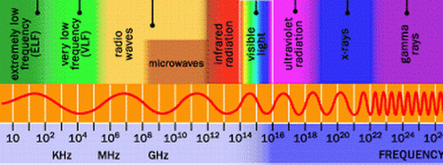
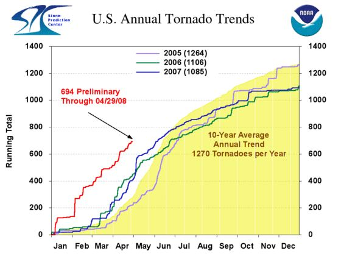
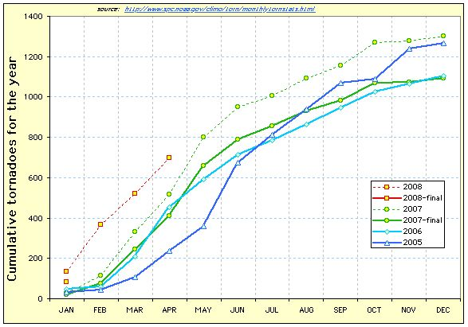

| Bottom | homepage |
|
|
|
|
|
Why Indeed |
|
|
9/11 Weather Anomalies and Field Effects
(page 7)
by
Judy Wood
This page last updated, May 19, 2008
|
click on images for enlargements.
|
This page is currently UNDER CONSTRUCTION.
|
Hurricane Erin, September 11, 2001
|
| Figure 1. (9/11/01) Source:, (9/11/01) Original Image: (more) 010911_1867.jpeg |
 |
| Figure 2. There are a lot of wavelengths here to choose from or "mix and match." (It need not be just one frequency or from just one direction, or just one mode of application). |
|
"Ground-based Star Wars Technology"
(discussed in the video below) |
| Video 1. | Video 2. |
|
HAARP - Holes In Heaven:
HAARP And Advances In Tesla Technology |
Owning the Weather
|
| Figure 3. (51 minutes) HAARP - Holes In Heaven: HAARP And Advances In Tesla Technology Dr. Bernard Eastlund, plasma physicist (1/19/05) URL: |
Figure 4. Owning the Weather - (45 min) - May 18, 2006 Documentary that looks at the history of weather modification and its use by the military. Among the topics covered are: cloud seeding, HAARP and declassified experiments (5/18/06) URL: Posted by: nevernwo.blogspot.com |
Owning the Weather Top
| Air Force Aims for Weather Control February 8, 2006 03:06 PM http://www.defensetech.org/archives/002163.html |
||
Someday the U.S. military could drive a trailer to a spot just beyond insurgent fighting and, within minutes, reconfigure part of the atmosphere, blocking an enemy's ability to receive satellite signals, even as U.S. troops are able to see into the area with radar.
In the past, NASA's fringe science arm has looked into tweaking Mother Nature, to throw hurricanes off their course. But those were just computer simulations. No one actually tried to go out a build some weather control machine. |
||
| Reference 1: Source: www.defensetech.org |
| Controlling Hurricanes September, 2004 By Ross N. Hoffman http://www.sciam.com/article.cfm?id=000593AE-704B-1151-B57F83414B7F0000 |
||
FURTHER READING The Rise and Fall of Weather Modification: Changes in American Attitudes toward Technology, Nature, and Society. Chunglin Kwa in Changing the Atmosphere: Expert Knowledge and Environmental Governance. Edited by Clark A. Miller and Paul N. Edwards. MIT Press, 2001. Available at http://www.sciam.com/ Controlling the Global Weather. Ross N. Hoffman in Bulletin of the American Meteorological Society, Vol. 83, No. 2, pages 241¿248; February 2002. Available at http://ams.allenpress.com Critical Issues in Weather Modification Research. Michael Garstang et al., National Research Council of the National Academies of Sciences. National Academies Press, Washington, D.C., 2003. Available at www.nap.edu/books/0309090539/html NOAA's Hurricane Research Division: www.aoml.noaa.gov/hrd/tcfaq |
||
| Reference 2: Source: www.sciam.com |
|
click on images for enlargements.
|
|
Tornado Count Up Over 800% for February – Unprecedented Start to the Year
February 28, 2008Holly Deyo http://www.standeyo.com/NEWS/08_Earth_Changes/080213.tornado.count.html |
||||
Normally we see about 1000 tornadoes a year. During 2007, 1,300 twisters ripped through the U.S. This barrage of unrelenting windstorms plagued the Midwest and rampaged eastward. Then something new happened: an unheard of twister barreled across Brooklyn, NY. This year, in a single February night, 68 tornadoes roared through Alabama, Arkansas, Kentucky, Mississippi and Tennessee. At least 58 people died: 32 in Tennessee, 13 in Arkansas, 7 in Kentucky and 6 in Alabama. This tornado outbreak was the nation's worst in more than two decades when 76 people were killed in Pennsylvania and Ohio on May 31, 1985. May, not February. The death toll ranks among the top 15 from tornado outbreaks since 1950. Again, this is tornado off-season. This very out-of-character wild weather has prompted scientists to ask if January is the new March. January 2008 - when it's supposed to be snowing - an unbelievable 136 tornadoes wrecked terrible damage. January usually sees about 34 twisters. So far, 232 have hit the U.S. this month which is 828% more than the ENTIRE month of February should see. February is typically the quietest month for tornado activity. You've got to admit something very different and very dangerous is going on here. At this vastly accelerated rate, well, who knows how rough this year will be... That 368 tornadoes have hit in the first 8 weeks show 2008 is not off to a good start. The bottom graph starkly illustrates 2008's sharp start to twister events. |
||||
| Reference 3: |
| Updated hurricane data, as presented on the NOAA website: | |
 |
|
| Figure 8. (5/1/08) webpage: NOAATornadodata2008.jpg |
Figure 9. (5/1/08) source: webpage: torgraph.jpg |
| Updated hurricane data, plotting the actual values given on the site: |
|
 |
|
| Figure 10. (5/1/08) webpage:tornado_month.jpg |
Figure 11. (5/1/08) webpage: tornado_year.jpg |
| Is NOAA being overly pessimistic? Their plot gives a more ominous appearance of the data. | |
| Unnatural Grid Appears in Nevada Earthquakes May 2, 2008 By Stan Deyo http://standeyo.com/NEWS/08_Earth_Changes/080502.NV.EQ.grid.html |
||
However, it was nothing compared to the very distinctive earthquake grid that's formed in Nevada. This simply can't be a natural event. There are many – literally hundreds – of earthquakes on this main image, but you can't truly appreciate the number until you look at the individual maps. To do so, click any of the circles on the map below and you'll see many earthquakes hidden in this onslaught. The unmistakable grid pattern looks as though the quakes were deliberately targeted. Check this high altitude view of the Reno earthquake "explosions". Red arrows indicate areas of highest earthquake density on the grid. One would have to ask, why would Crystal Peak Golf course be targeted? Go to main Earth changes news |
||
| Reference 4: Source: standeyo.com |
| Reno, Nevada, Burst of Earthquakes April 25,26,27,29,29, and May 1, 2008 By Stan Deyo |
||||||||||||||||||||||||||||||||||||
|
||||||||||||||||||||||||||||||||||||
| Reference 5: Source: standeyo.com |
| Figure 14. The person who said they took this picture on April 14, 2008, in northwest Ohio, said that the chemtrails were unusually prevalent from April 14 to April 18, 2008. (4/14/08) Source: website: |
|
Last 2 Weeks of Earthquakes
(within 10 degrees of LON=-87.8926, LAT=38.5708) DATE links are into the IRIS WILBER system where you can see seismograms and request datasets.
Source: Earthquake data courtesy of
|
||||||||||||||||||||||||||||||
| Figure 15. (4/30/08) Source: webpage |
| Figure 16. 0 (4/30/08) Source: webpage: legend: |
Figure 17. (?/?/?) Source: website: |
| Figure 18. April 19, 2008, 12:00 pm (4/19/08) Source: website: |
Figure 19. April 19, 2008, 4:00 pm (4/19/08) Source: website: |
| Figure 20. April 19, 2008, 6:40 pm (4/19/08) Source: website: |
Figure 21. April 20?, 2008, 2:40 am (4/20?/08) Source: website: |
| Figure 22. (4/19/08) Source: website: |
Figure 23. April 19, 2008, 12:00 pm (4/19/08) Source: website: |
|
April 18, 2008, Indiana Swirl
Water Vapor - ECWV |
April 18, 2008, Indiana Swirl
InfraRed - ECIR |
|
|
|
| Figure 25. From NOAA data. There was an Earthquake in Indiana on 18th of April 2008 at 9:37am and at 15:14 (4/18/08) URL: Posted by: adjuk |
Figure 26. From NOAA data. There was an Earthquake in Indiana on 18th of April 2008 at 9:37am and at 15:14 (4/18/08) URL: Posted by: adjuk |
|
April 18, 2008, Indiana Swirl
Visual - ECVS |
|
|
| Figure 24. From NOAA data. There was an Earthquake in Indiana on 18th of April 2008 at 9:37am and at 15:14 (4/18/08) URL: Posted by: adjuk |
| MY MOST INCREDIBLE HURRICANE DISASTER SCENARIO January 13, 2006 by Dr. Steve Lyons, Tropical Weather Expert |
|
This Sunday at 9:30 ET & PT, The Weather Channel debuts a new show, "It Could Happen Tomorrow." The first episode deals with a hurricane the size and intensity of the 1938 Long Island Express taking a track just a bit farther west and bringing the strongest part directly across the NYC metro area. Even before I knew about any plans for this series, not ever far from my mind has been the most incredible (but remotely possible) hurricane disaster that could befall the U.S. Now don't get me wrong - nobody wants any hurricane to make landfall on U.S. soil (or anywhere else for that matter) and the chance this scenario will/could ever happen is extremely low. But imagining what could be the worst at least prepares one for what could happen! So here is my imaginary worst case. Each hurricane season it lurks in the back of my mind. It is fall, and the hurricane season is winding down. The public has grown weary of hearing about hurricanes in the news; some are tired of having their lives interrupted by one. A weak cold front drops south into the northern Gulf of Mexico and tropical storm "Disaster" forms just off the coast of Texas (similar to Allison in 2001). It remains a tropical storm, but moves back onshore and floods Houston with three feet of rain in 24 hours. A costly and major flood event ensures. The weakening tropical depression drifts back offshore as did Allison, but instead of hugging the coast, Disaster moves ESE into the Central Gulf of Mexico and rapidly strengthens to a major hurricane. It cranks into Tampa-St. Pete as a category 4 hurricane bringing huge wind damage and surge that fills Tampa Bay, floods low-lying areas of the city, many coastal residences, and surges up streams and rivers flooding there as well. The accelerating hurricane roars quickly across central Florida, still a strong category 2 hurricane as it blasts across Orlando, then Jacksonville (not too different from Charley in 2004, except 5 times the size!). Back over open water Disaster taps a developing jet stream outflow to its north and quickly strengthens once again to category 4 off southern Georgia. It accelerates on the southern edge of a sharpening jet stream and narrowly misses making landfall in North Carolina. Though a near miss, the left eyewall crushes Wilmington and all of Cape Hatteras with category 2 and 3 hurricane force winds. Hurricane Disaster, now moving at more than 50 mph, continues to accelerate north (very similar to the 1938 hurricane). As the strong autumn jet stream tilts toward the NNW it steers Disaster into western Long Island and New York City. The 60 mph forward motion allows time for only one category of weakening; it hits New York as a major hurricane. Surge floods Manhattan's subway system as Wall Street goes under water. Winds blast the windows from high rise buildings; massive power outages occur. Some airports are under water. The upper-level trough that has steered Disaster NNW continues to cut off into an intense upper-level cyclone. Hurricane Disaster merges with it and meanders over New Jersey, Philadelphia, Washington D.C., and Baltimore. Record rains flood low-lying areas and cause widespread stream and river flooding. Roads are impassible. What is left of hurricane Disaster, after merging with the strong upper low, finally transitions into a strong non-tropical low that turns into a powerful nor'easter from Boston to Atlantic City. Huge damage to coastal residences results, along with major beach erosion. Disaster finally moves into the north Atlantic. But it has caused more than $10 billion in flood damage to Houston, $60 billion in damage to Tampa/St. Pete, $20 billion in damage to Orlando, $5 billion in damage to coastal Georgia, South Carolina and North Carolina, $150 billion in damage to New York and another $30 billion in damage from Atlantic City to Cape Cod. Total damage is near $300 billion, not to mention huge and long lasting impacts to the U.S. business economy. Okay, this is even more extreme than what is depicted in Sunday night's show, and it's a long shot for all of this to happen from one cyclone. But every component of the scenario I've described above is absolutely plausible. Are we ready? |
| Posted at 1:07 pm ETComments (9) | Permanent Link Comments on this entry (9) I admire Steve Lyons and the Weather Channel for addressing the real possibility of a major hurricane hitting the New York area. I live in Mississippi, and we NEVER thought we would see hurricane surge wipe out the ENTIRE immedate Mississippi Gulf Coast....but it happened!! I remember in the preceding days before Katrina hit, Dr. Steve Lyons presented a computer generated graphic of what the surge would look like, but obviosly a lot of people didn't see it, or chose to ignore it. The people of New York should pay attention. They have been hit by hurricanes in the past, and with the intensifying of major hurricanes lately, IT COULD HAPPEN AGAIN. If they doubt it, they need to come to the Mississippi Gulf Coast, and talk to the residents there whose homes were lost to surge water, in areas that have never flooded from surge before. Yes, it can happen when you least expect it. Posted by Melissa Sheffield | January 26, 2006 Mr. Strong indicates I have horribly exaggerated a New York city major hurricane strike. First let me say I never said is was a routine occurrence, obviously it is a rare event. How rare depends on the statistics you use, but check out this link that describes the 1893 hurricane and the day Hog Island, NY disappeared: http://www.newyorkmetro.com/nymetro/news/people/columns/intelligencer/12908/ It takes no "imagination" to re-live a 1893 track into New York City from the SSE or SE, all the while being over water prior to that time (a slight NW turn in a 1938 hurricane track consistent with a rapidly developing mid/upper level low over the Ohio Valley). Yes, I realize the common track is over North Carolina, then turning NE away from the U.S., but I was not addressing a most common/typical scenario. Regards surge in New York...that is but one component of "water rise" which TWC routinely provides, rather than just "surge". Water rise from very high waves (setup) in such an event "could" be 5-8 feet by itself in a large hurricane. Surge from wind in the right quadrant of that large hurricane would add another 15-18 feet, or more. Yes, small inland rivers and streams might be spared some surge from a fast mover, but the wide-open water between Long Island and New Jersey would NOT (as it has not) impede surge from easily rushing in from the SSE or SE. A rare event, absolutely; an impossible event, absolutely not. A big disaster WHEN it happens in New York, absolutely! Posted by Steve Lyons | January 24, 2006 Dr. Lyons: The Weather Channel needs to get back to the business of reporting and forecasting the WEATHER. We watched the Weather Channel in the past for expert, reliable, consistent weather info. We do not need to be entertained or feel that we are watching a talk show. I suspect that the pressures of the rating wars are tremendous but everyone I talk to thinks you are going in the wrong direction. 'It Could Happen Tomorrow' (Which most people I have talked to refused to watch) and endless repeats of 'Storm Stories' is simply sensationalist journalism. REPORT the WEATHER and FORECAST the WEATHER. We do not want a 'Jerry Springer'style of show on the Weather Channel. Bad weather is bad enough without you guys beating it in to us over and over. Regards...........Ed Mitchem Posted by Ed Mitchem | January 21, 2006 I missed the 'It Could Happen Tomorrow' programme. One thing is for sure, though, I can't imagine a hurricane would ever hit New York City in January. I am from London, England and have lived in New York for six years. But in England, especially in September, October and sometimes November, we frequently used to get battered by wind and rain from the remnants of Atlantic hurricanes, even when the centres of circulation made landfall in Iceland. Is it conceivable that as sea surface temperatures rise, that it would be possible for a hurricane to make it to the British Isles and make landfall still at hurricane strength? Posted by Anthony Poole | January 20, 2006 Dr. Cullen I got a former student into a bit of trouble with her meteorology professor. He wanted her to research the increasing occurrence of big hurricanes and if they are getting bigger. He was looking for an answer relating to global warming, but I gave her the North Atlantic Oscillation Index influence. I explained how a positive index leaves the “door” open for storms to cross the Atlantic, and since we have had a strong positive index the last few years the number of storms has increased. Now the real problem is, if the storms are getting stronger. Based on the track of the past 3 years storms I said no. Going back to Ivan, watching the storm grow into a monster I waited for it to intensity further. It did not. As a matter of fact the eye wall collapsed and it weakened to a cat. 4. Grew back to a 5 then the eye wall collapsed again. Observing the next few big storms, I saw the same thing. When Rita crossed over the 90+ degree water of the Gulf, I figured she would have developed even further into a storm like no other, but the same thing as Ivan she weakened. Based upon this information I told my former student my idea on the maximum hurricane our atmosphere can support. I think the density of our atmosphere can support a storm of a cat.5 and no more. A thicker atmosphere could probably support a larger storm but at our current conditions, the eye wall collapses and the storm weakens leaving a “Day After Tomorrow” scenario for another planet. Any info on this? Posted by bruckner | January 18, 2006 From researching tropical cyclones on the internet, I’ve noticed a few things. The hurricanes of 1938, 1944, 1954, 1960, 1976, 1985, and 1991 all hit central and eastern Long Island and passed into Connecticut or Rhode Island. In every one of these storms - the intense eastern half of the cyclone always passed over eastern Long Island, eastern Connecticut, or Rhode Island. If a hurricane’s eastern semi-circle was to pass over NYC proper - while moving northward parallel to the mid-Atlantic coast – wouldn’t it have to turn sharply left (west) into the westerlies at 39 north latitude? Given the hurricane history of the Northeast, isn’t this really far-fetched ? Historically, hurricane damage in the northeast has always been on eastern Long Island, eastern Connecticut, and Rhode Island. Posted by Bob on LI | January 17, 2006 While Dr. Lyon's "Hurricane Disaster" and the "It Could Happen Tomorrow" scenarios are possible, they are highly unlikely. For a fast moving huricane to maintain strength and bring a heavy storm surge into New York harbor and southern Manhattan it would need to be moving in a north-easterly direction with the eye making landfall on Staten Island. North-easterly hurricane tracks at the lattitude of New York are quite uncommon. Further east and New York would be on the west side of the hurricane - by far the weaker side in the case of a fast moving storm. If the storm were moving in more of a northerly direction (the 1938 storm was moving near due north) it would have spent a good deal of time over New Jersey and to the east of the Gulf Stream, weakening it substantially. Furthermore, even with perfect track, a major storm surge at Manhattan is unlikely. With a fast moving storm there would be little time for the storm surge to build through the Narrows between Staten Island and Long Island. Both Dr. Lyon's and "It Could Happen Tomorrow" grossly exagerate New York's risk from a major hurricane. It would take a highly unusual storm track and pinpoint aim for this scenario to play out. More likely a one in 5000 year possibility than the every 70 years that "It Could Happen Tomorrow" implies. Posted by Ron Strong | January 15, 2006 In the description of your mythical hurricane for "It could Happen Tomorrow", you likened the beginning of it to Allison, which devastated Houston with up to 3 feet of rain in June 2001. Do older folks reliaze that the ending of this storm also can be likened to another devastating tropical storm rain event. This was Agnes, which made landfall over Monmouth County N.J., went just west of N.Y.C, and joined an upper low over Pennsylvania and caused devestating rain from Fairfield County Conn. to central Pennsylvania and South Central New York (Elmira, Corning Williamsport area) in June 1972. Of course, she had been downgraded to a Tropical Storm but otherwise, the scenario is amazingly accurate. If that were Sept instead of June, and had she been out over the ocean a bit longer, we could have had a Cat 3 taking that same track as on your program. It CAN happen. Posted by Pat C, Shelton Conn | January 14, 2006 Steve, I cannot wait for this series to begin, it reminds me of in 2000 when the Weather Channel hosted a great program Called Storms of The Century. I ENJOY THE WEATHER CHANNEL SHOWS. Sort of like this year everyone disliked the worfd hurricane or storm, because the final count was 29. It seems like a hurricane has a mind of it's own, to change the track, or when a front goes by like so many other storms, this Long Island Express did it too!!!!!!! The power of nature can be very life threating. We really don't need this to occur, however we need to be prepared for the worst, this hurricane season has proven to be very strange, such as Zeta forming on 12/31Brian Posted by Brian Boehlert | January 13, 2006 |
| Reference: MY MOST INCREDIBLE HURRICANE DISASTER SCENARIO, 4: Source: January 13, 2006 |
| Unnatural Grid Appears in Nevada Earthquakes May 2, 2008 By Stan Deyo |
||
|
||
| Reference 4: Source: |
| Unnatural Grid Appears in Nevada Earthquakes May 2, 2008 By Stan Deyo |
||
|
||
| Reference 4: Source: |
| Video 3. | Video 4. |
|
Local news station confirms barium in chemtrails
|
Chemtrails
|
| Figure 27. (0:03:43) URL Added: November 10, 2007 From: peeklip |
Figure 28. (0:00:56) URL Added: February 08, 2007 From: GunmanRAC |
| Posted: Nov 9, 2007 07:46 PM EST Could a strange substance found by an Ark-La-Tex man be part of secret government testing program? That's the question at the heart of a phenomenon called "Chemtrails." In a KSLA News 12 investigation, Reporter Jeff Ferrell shows us the results of testing we had done about what's in our skies. story by Jeff Ferrell http://www.ksla.com/ |
ZDF Chemtrails Reportage |
| Breaking the Nuremberg Code: The US Military Human-Testing Part 1 of Heather Wokusch discussing "Breaking the Nuremberg Code." Covers Edgewood Arsenal, Project 112/SHAD and Stratton VA. http://www.youtube.com/watch?v=FH7WVR... Also, here is her website: http://www.heatherwokusch.com/index.p... A Doctor Speaks Out About Chemtrails four scenarios http://www.americanchronicle.com/arti... Also, some may want to change the scary term "chemtrails" to..."cloud seeding." Just read Senate Bill 517. http://www.govtrack.us/congress/billt... Germany Admits to Clandestine Chemtrail Ops. http://www.chycho.com/?q=Chemtrails SHREVEPORT, LA CHEMTRAILS: Is U.S. Gov't. Secretly Testing Americans 'Again'? Posted: Nov 9, 2007 07:46 PM EST Could a strange substance found by an Ark-La-Tex man be part of secret government testing program? That's the question at the heart of a phenomenon called "Chemtrails." In a KSLA News 12 investigation, Reporter Jeff Ferrell shows us the results of testing we had done about what's in our skies. story by Jeff Ferrell http://www.ksla.com/ Left side, sixth video down, watch it before they take it down... Also see, http://www.ncbi.nlm.nih.gov/sites/ent... Finally, PUBLIC LAW 95-79 [P.L. 95-79] TITLE 50, CHAPTER 32, SECTION 1520 "CHEMICAL AND BIOLOGICAL WARFARE PROGRAM" "The use of human subjects will be allowed for the testing of chemical and biological agents by the U.S. Department of Defense, accounting to Congressional committees with respect to the experiments and studies." "The Secretary of Defense [may] conduct tests and experiments involving the use of chemical and biological [warfare] agents on civilian populations [within the United States]." -SOURCE- Public Law 95-79, Title VIII, Sec. 808, July 30, 1977, 91 Stat. 334. In U.S. Statutes-at-Large, Vol. 91, page 334, you will find Public Law 95-79. Public Law 97-375, title II, Sec. 203(a)(1), Dec. 21, 1982, 96 Stat. 1882. In U.S. Statutes-at-Large, Vol. 96, page 1882, you will find Public Law 97-375. |
| Reference 6: Thanks to peeklip for this information. |
|
CHEMTRAILS: Is U.S. Gov't. Secretly Testing Americans 'Again'?
SHREVEPORT, LAPosted: Nov 9, 2007 08:46 PM EDT Updated: Dec 21, 2007 08:17 PM EDT [emphasis added] |
||
"It seemed like some mornings it was just criss-crossing the whole sky. It was just like a giant checkerboard," described Bill Nichols. He snapped several photos of the strange clouds from his home in Stamps, in southwest Arkansas. Nichols said these unusual clouds begin as normal contrails from a jet engine. But unlike normal contrails, these do 'not' fade away. Soon after a recent episode he saw particles in the air. "We'd see it drop to the ground in a haze," added Nichols. He then noticed the material collecting on the ground. "This is water and stuff that I collected in bowls. I had it sitting out in my backyard in my dad's pick-up truck," said Nichols as he handed us a mason jar in the KSLA News 12 parking lot back in September after driving down from Arkansas. KSLA News 12 had the sample tested at a lab. The results: A high level of barium, 6.8 parts per million, (ppm). That's more than three times the toxic level set by the Environmental Protection Agency, or EPA. Armed with these lab results about the high levels of barium found in our sample, we decided to contact the Louisiana Department of Environmental Quality. They told us that, 'yes,' these levels are very unusual. But at the same time they added the caveat that proving the source is a whole 'nother matter. We discovered during our investigation that Barium is a hallmark of other chemtrail testing. This phenomenon even attracted the attention of a Los Angeles network affiliate, which aired a report entitled, "Toxic Sky?" There's already no shortage of unclassified weather modification programs by the government. But those who fear chemtrails could be secret biological and chemical testing on the public point to the 1977 U.S. Senate hearings which confirmed 239 populated areas had been contaminated with biological agents between 1949 and 1969. Later, the 1994 Rockefeller Report concluded hundreds of thousands of military personnel were also subjected to secret biological experiments over the last 60-years. But could secret testing be underway yet again? "I'd rather it be something inert and you know something that's not causing any damage but I'd like to know what it is," concluded Nichols. KSLA News 12 discovered chemtrails are even mentioned by name in the initial draft of HR 2977 back in 2001, under the Space Preservation Act. But the military denies any such program exists. It turns out, until just nine years ago the government had the right, under U.S. law, to conduct secret testing on the American public, under specific conditions. Only a public outcry repealed part of that law, with some "exceptions." Mark Ryan, Director of the Poison Control Center, explained that short term exposure to barium can lead to anything from stomach to chest pains, with long-term exposure causing blood pressure problems. Ryan addressed concerns by chemtrail researchers that barium could be meant to wear down a person's immune system. "Anything that causes ill effects on the body long-term, chronically, is going to affect your ability, it's just constantly working on the body. So from that aspect yeah it's a potential." Ryan told us he's conducted research of his own about secret government testing on the public. But he's still a bit skeptical about chemtrails at the moment, especially considering that his Poison Control Center has seen no calls about barium exposure. Story by Jeff Ferrell |
||
| Reference 7: http://www.ksla.com/Global/story.asp?S=7339345 |
|
Evidence: Chemtrails include hazardous barium compounds [emphasis added] |
|
The next time you watch chem-spewing jets wreck a blue sky with a toxic fluorescent haze, think BARIUM. There is growing evidence that we are swimming in the stuff. So lets review some facts about a substance we may be eating, drinking and breathing in large quantities. Leading chemtrail researcher Clifford Carnicom has completed a series of impressive reports citing evidence that our atmosphere is now saturated with barium compounds as a result of the military's on-going weather and atmospheric modification projects. The presence of metallic alkaline salts in rainfall samples collected nationwide indicates that the atmospheric pH is being rapidly modified -- most likely by barium. Barium facilitates weather mod projects because it can create cloud formations at extremely low humidity, when natural clouds cannot form. Barium oxide (a salt) is a desiccant (drying agent) and can be used by the military to de-humidify clouds and dry up unwanted precipitation. Have your skin, mucus membranes and eyes been very dry lately? Barium occurs naturally in two primary forms, barium carbonate and barium sulfate. Both of these metallic substances are mined. Many compounds of barium can be developed in a chemical lab, such as barium titanate, a combination of barium, titanium and oxygen. Radioactive barium is a uranium fission product produced when the nucleus of a U-235 atom is hit by a neutron. We know that America's military-industrial complex has been spewing various forms of barium into our atmosphere for years. The University of Alaska has propelled barium into space in order to study the earth's magnetic field lines. The military used barium salts over enemy territory in Libya, Panama and Iraq, reportedly to make the population sick. A recent report from Wright-Patterson Air Force Base confirms that the Air Force has been spraying barium titanate across the United States to facilitate advanced radar studies. Chemical handbooks state that barium is highly toxic to human beings. The officially “safe” levels of barium in the environment are quite low, on the order of 1-2 parts per million. The Agency for Toxic Substances and Disease Registry warns that humans who ingest high levels of barium can develop problems with the heart, stomach, liver, kidneys, spleen and other organs. It also confirms that ingesting high levels of water soluble barium compounds can cause:
Soluble salts of barium can stimulate all muscles of the body, producing contractions of the skeletal muscles and spasms of the smooth muscles of blood vessels, bronchi, stomach and intestines. These salts can radically increase the force of the heartbeat, a potentially lethal situation for the elderly and the chronically ill. In toxic doses, these salts can cause high blood pressure, asthmatic attacks, burning sensation in the stomach, nausea, vomiting and convulsions. One chemical directory advises that barium be kept out of the reach of children. Great stuff to be spraying over the civilian population of our nation, is it not? When barium reacts with water to form barium hydroxide, as it would in the moist atmosphere, it liberates much heat. This could explain why, on heavy spray days in warm weather, people complain about the abnormal, almost microwave-type heat they feel. If our benevolent government really cared about global warming, would it spray the atmosphere with heat-generating compounds? Is the government's secret chemtrail aerosol project being used to increase atmospheric heat in order to perpetuate the global warming crisis for the cash cow that it is? One troubling question not yet answered is: Would the military dare spray us with the radioactive form of barium? If so, it would not be the first time our government has deliberately exposed hapless Americans to radioactive materials which later produce illness and death for countless unsuspecting victims. For more information go to http://www.carnicom.com/contrails.htm. Click on “A Case for Testing” and the other barium-related reports available at this web site. |
| Reference 4: source: http://www.santacruzhousing.net/observer/20001112.htm |
|
ENFORCEMENT AND TOXICITY
Clifford E CarnicomSanta Fe, New Mexico May 24 2004 |
| A preliminary analytical estimate of the concentration of barium compounds within atmospheric samples that are under analysis has been reached. This estimate exceeds the limit of human exposure to airborne contaminants. The question of the enforcement of air quality standards arises as a result of this study, and further public involvement with environmental organizations and agencies is advised to address this potential problem. Atmospheric sample tests continue to confirm the presence of barium compounds within the atmosphere. The tests involve a variety of collection methods, including the use of plate ionization filters, electrostatic air filters, HEPA filters, and high grade furnace filters. Methods of analysis include solubility, pH, precipitation, chromatography, electrode, electrolysis, flame, spectroscopy and spectroscopy comparison tests. Public environmental agencies are advised to begin the process of replicating the test methods to confirm or refute the results that have been established. Soluble forms of barium are highly toxic, and are on par with the toxicity levels of arsenic. The compound reported under this analysis has been collected with a plate ionizing filter. The method of titration leads to a initial concentration estimate of approximately 4 parts per million (ppm). This is an estimate based upon the examination of one sample (collected over an interval of several weeks) only; testing by public service agencies with quantitative equipment with independent verification and monitoring is required. This report is provided as an estimate and an advisory. The initiation of quantitative tests by public service agencies, with independent monitoring and verification, is required. The maximum allowable limit for human exposure to barium atmospheric contaminants is 0.5 ppm1; the current test result indicates that this limit may be exceeded by a factor of approximately eight times. The maximum allowable limit for human exposure to arsenic is also stated to be 0.5 ppm.2 |
| Additional Notes: TO BE CONTINUED This page is subject to revision. References: 1. Dr. M. Fogiel, Staff of Research and Education Association, Handbook of Mathematical, Scientific, and Engineering Formulas, Tables, Functions, Graphs, Transforms, (Research and Education Association), 964. 2. Fogiel, 964. |
| Reference 8: Source: http://www.carnicom.com/ppm1.htm |
| BARIUM TESTS ARE POSITIVE Clifford E Carnicom Santa Fe, New Mexico May 24 2004 [emphasis added] |
||
| A series of qualitative chemical tests and deductions now confirm without doubt the presence of significant amounts of barium within atmospheric samples. Citizens may now begin the process of collecting the sample materials for formal submission to public environmental agencies and private labs for identification. The testing process can be done at modest expense and the results from laboratory analysis can now be qualitatively and independently verified without great difficulty. Any testing service employed will need to be able to demonstrate no vested interest in the outcome of the results, accuracy of method, and the willingness to have the testing process independently monitored. The material under analysis has been collected by a plate ionizing filter; it may also be collected with conventional fiber filtration over a longer period of time. HEPA filter collection and subsequent electrolysis of the filter material placed in distilled water has also proven successful. Extended time periods may be required to collect a sufficient volume of material for electrolytic processing and external testing preferences. Readers are referred to previous articles1,2 for two methods of collection. The use of electrolysis is significant in producing a final compound for testing purposes. The solid materials (powder/ crystals) collected by the plate ionizing filter, assuming they satisify the test procedures described on this page, will be sufficient for laboratory analysis. Qualitative chemical tests and flame tests positively establish the significant presence of barium compounds within the atmospheric sample. Citizens with sufficient environmental concern are encouraged to begin this process of sample collection and identification, along with the documentation of the responses of both public and private environmental services. |
||
| Additional Notes: The process of collection and analysis is summarized as follows: 1. Solid materials are collected with the use of a plate ionizing filter or fiber based filters as described previously.1,2 2. The material can be subjected to low power microscopic viewing to verify similiarity of material form before proceeding. The powder/crystal material under collection has a tan, beige or gray cast to it. The presence of fibrous materials within the sample is not the focus of this report, and further analysis of those materials may occur at a later time. 3. The solid powder/crystal material that is the subject of this report will be found to dissolve easily within distilled water. Extremely small samples have been used for all tests as the material requires time and effort to collect in sufficient quantity. For testing purposes, samples of a fraction of a gram have been dissolved within a few milliliters of distilled water. 4. Solutions of higher concentrations, e.g., 1 part solid to 3 parts water will be found to be strongly alkaline. This indicates the presence of a base and hydroxide ions. A pH value of 9 was recorded in the test that is the subject of this report. 5. A weak solution (fraction of a gram to 40ml water) will be found to permit significant electrolysis reactions. A variety of electrodes have been used to verify the chemical results, including aluminum, iron, copper, silver and graphite electrodes. The work at this point establishes the presence of a soluble metallic hydroxide form in solution. 6. Chromatography experiments and comparative analysis allows us to conclude that the atomic mass of the metallic cation under examination is greater than that of copper, or greater than 63.5 atomic mass units.3 Cations under reasonable consideration4 therefore include: Ag+, Au+2, Ba+2, Bi+3, Cd+2, Ce+4, Cs+, Ga+3, Hg+2, Pb+2, Rb+, Sb+3, Sn+2, Sr+2 7. The results of electrolysis with graphite electrodes permits us to conclude that a reactive metal is a component5 of the metallic hydroxide under examination. 8. The electrochemical series and the half-reaction electrode potentials are therefore consulted6,7 to establish a list of reasonable candidates for the cation of the metallic salt which disassociates in solution to permit electrolysis. The list of candidate cations, with the condition of hydroxide formation included, is now reduced to: Ba+2, Sr+2, Rb+ and Cs+ with oxidation potentials of 2.91, 2.90, 2.98 and 3.03 volts respectively. It is noticed that this group is now closely confined within the periodic table, and that chemical properties of these elements are in many ways shared. It is also instructive to note the remarkable similiarity in the work functions of these elements, which is an expression of the ionization capabililty of the element. 9. Each of these cations must form a soluble hydroxide. Solubility tables8 indicate that these conditions are satisified by each of the hydroxide forms: Ba(OH)2, Sr(OH)2, RbOH and CsOH. 10. Practical levels of worldwide production of the elements are helpful to consider9. Barium and strontium both are produced at high tonnage levels worldwide, rubidium and cesium are inconsequential in production. Barium production is stated at 6 million tons per year, strontium at 137,000 tons, cesium at 20 tons and rubidium in such low levels as to not be available. Common hydroxide forms are also to be considered in this analysis. This reduces the candidate cation list to strontium and barium, whereupon additional conditions of qualitative testing are to be imposed. 11. The material in solution must produce a cation and a hydroxide ion in solution. Precipitate tests are conducted with carbonate, oxalate and sulfate compounds for the existence of barium or strontium ions, using a combination of the unknown with sodium carbonate, sodium oxalate and copper sulfate10. The material in question forms a precipitate under all three conditions. The consideration of barium hydroxide and strontium hydroxide continues to be valid under under these results. 12. The precipitate formed with the use of copper sulfate is hypothesized to be barium sulfate. The precipitate formed under electrolysis is also hypothesized to be a barium sulfate compound. Solubility tests are necessary to test this hypothesis. The precipitate and the compound formed from electrolysis pass the solubility tests when subjected to water, hydrochloric acid, sulfuric acid and ethanol. The identification of barium sulfate remains valid. The sulfate precipitate fails the solubility test for strontium sulfate, as barium sulfate is soluble in hydrochloric acid. The sulphate compound that has been formed by both displacement and electrolysis is highly insoluble, and is insoluble in hydrochloric acid. 13. The solubility test for barium carbonate should also be verified. The carbonate precipitate is soluble in hydrochloric acid and passes this test. The identification of barium compounds in the analysis remains valid. No solubility tests for barium oxalate are specified11. 14. The next test which is to be conducted is the flame test. Barium burns yellow-green under the flame test12,13. A sample of the electrolysis compound, identified as barium sulphate, is subjected to a flame test using a nichrome wire. The compound is observed to burn with a yellow-green color. The identification of barium compounds within the analysis is valid under all conditions and circumstances examined. 15. The final test is a viewing of the spectrum of the flame test with a calibrated spectroscope and an optical spectroscope. Dominant green and yellow emission spectral lines are measured at approximately 515 (wider line, boundary line) and 587 nanometers (narrow and distinct), they are confirmed with the optical spectroscope, and they correspond to the green and yellow wavelengths specified for the flame test. A secondary wide line in the green portion of the spectrum borders at approximately 560nm. For comparison purposes, the spectrum of barium chloride and barium hydroxide test salts in solution appears and measures identically within the green portion of the spectrum. The identification of barium compounds within the analysis remains valid under all conditions and examined and tests conducted.
This page is subject to revision. References: 1. Clifford E Carnicom, Electrolysis and Barium, (http://www.carnicom.com/precip1.htm), May 27, 2002 2. Carnicom, Sub-Micron Particulates Isolated, (http://www.carnicom.com/micro3.htm), Apr 26, 2004 3. Frank Eshelman, Ph.D., MicroChem Manual (Frank Eschelman, www.microchemkits.com, 2003), 1-4, 76. 4. Gordon J. Coleman, The Addison-Wesley Science Handbook (Addison-Wesley, 1997), 130. 5. Andrew Hunt, A-Z Chemistry, (McGraw-Hill, 2003), 125. 6. David R. Lide, CRC Handbook of Chemistry and Physics, (CRC Press, 2001), 8-21 to 8-31. 7. Fred C. Hess, Chemistry Made Simple, (Doubleday, 1984), 89, 91. 8. Lide, 4-37 to 4-96. 9. John Emsley, The Elements, (Clarendon Press, 1998), 30-31, 46-47, 176-177, 196-197. 10. University of Nebraska-Lincoln, The Identification of Ions, (http://dwb.unl.edu/Chemistry/LABS/LABS10.html) 11. Lide, 4-44. 12. Hunt, 152-153. 13. Infoplease Encyclopedia, Flame Test, (http://www.infoplease.com/ce6/sci/A0818856.html) |
||
| Reference 9: Source: http://www.carnicom.com/flame1.htm |
| Video 4. | Video 5. |
|
Doesn't anyone else notice this?
|
Stop Spraying Us
|
| Figure 31. (0:00:34) URL November 09, 2006 From: rewindme |
Figure 32. (0:02:13) URL Added: March 19, 2007 From: kissthisguy88 |
| mystery lines all over southwest missouri on november 9th | Sick of the spraying? Sign the chemtrail petition. Pass this video on. http://new.petitiononline.com/t401/petition.html A "Don't Chemtrail Me Bro" Production |
|
UN-banned weapon system can trigger hurricanes, earthquakes, tsunamis
UN-banned weapon system can trigger hurricanes, earthquakes, tsunamis by PeaceFan Saturday, Sep. 10, 2005 at 4:24 PM |
|
The UN has banned it. It's reported to be in the arsenal of several nations, including the U.S. It's reported to be OPERATIONAL. What are we going to do about this weapon system? And did it play a role in creating Hurricane Katrina or in steering her along her murderous path? |
|
"The US Air Force has the capability of manipulating climate either for testing purposes or for outright military-intelligence use. These capabilities extend to the triggering of floods, hurricanes, droughts and earthquakes." (excerpt from "Article 4" below) |
|
| For almost two weeks, many have fumed, finger-pointed, and theorized about the purportedly "incompetent" or "slow" or "bungled" or "virtually nonexistent" government response to Hurricane Katrina. Sure, the response was all of that and much worse. But a few are now daring to ask: did elements within the U.S. or other governments have a role in creating, "enhancing," or steering Katrina toward her Gulf Coast target, using advanced military technology? If so, was Katrina at least in part an act of mass murder and treason, perhaps by rogue elements within the Pentagon or its private contractors--or was it, possibly, a stealthy act of war against the U.S.? The four articles below suggest these are reasonable questions and EXACTLY the questions we--and Congress--should be asking NOW. Please read and draw your own conclusions. Then consider what steps we, the world's humans, can take to get answers, unearth truth, demand accountability, end military madness, and salvage what's left of our environment. As you read, think about last winter's tsunami, which destabilized a highly strategic region for hydrocarbon production and, especially, hydrocarbon shipping. Think about the 2001 FEMA report that identified the THREE "likeliest, most catastrophic disasters facing this country": a terror attack on New York, a major hurricane's direct hit on New Orleans, and a major earthquake in Northern California. Is it two down, one to go? And think about the eerie parallel with September 11, in which another little-publicized technology may have played a starring role: technology allowing ground-based, remote-control piloting of airliners, with no hijackers even necessary. (For info on this, do a search on "Global Hawk" or on "Flight Termination System," or read Mike Ruppert's "Crossing the Rubicon" and/or Webster Tarpley's "9-11 Synthetic Terror.") (You might also check out the October 10, 2004 article "Space Age Plan to Tame Might of Hurricanes" at http://observer.guardian.co.uk/international/story/0,,1323863,00.html) |
|
| ARTICLE 1: HARNESSING WEATHER: ALLEGATIONS SURFACE THAT U.S. & RUSSIA HAVE TECHNOLOGY TO MANAGE HURRICANES Excerpts from a September 4, 2005 article at American Free Press, titled "HARNESSING WEATHER: ALLEGATIONS SURFACE THAT U.S. & RUSSIA HAVE TECHNOLOGY TO MANAGE HURRICANES" (http://www.americanfreepress.net/html/harnessing_weather.html) "Is weather manipulation a means of conducting war? If not, why in 1977 did the United States, the then-Soviet Union and dozens of other countries believe it was a good idea to enact a UN treaty banning weather manipulation as a means of conducting war?" "According to a UN pamphlet, titled Basic Facts about the United Nations, which was published in 1994, the world body negotiated the Convention on the Prohibition of Military or Other Hostile Use of Environmental Modification Techniques in 1977. This 'prohibits the use of techniques that would have widespread, long-lasting or severe effects through deliberate manipulation of natural processes and cause such phenomena as earthquakes, tidal waves, and changes in climate and in weather patterns.'" |
|
| ARTICLE 2: Discordant HAARP: The Air Force is Preparing to Militarize the Ionosphere-With Electrifying Results Excerpts from the January/February 1997 issue of E/The Environmental Magazine, titled "Discordant HAARP: The Air Force is Preparing to Militarize the Ionosphere-With Electrifying Results" (http://www.emagazine.com/view/?8) "In a black spruce forest north of Alaska's Wrangell-St. Elias National Park, a bristling array of antennas rises into the air. It looks like a cable television station, but it's something far more ominous: the military's semi-secret High-frequency Active Auroral Research Program (HAARP), designed to give the Pentagon strategic control over the upper atmosphere. HAARP, slated for final completion in 2002, sends out a focused and steerable electromagnetic (EM) beam that can superheat and actually lift sections of the ionosphere--the electrically charged upper layer of our atmosphere lying 40 to 500 miles above the Earth's surface. The EM waves are targeted to bounce back to Earth from "virtual" mirrors and lenses, created by warming specific areas of the ionosphere until they produce a flat or curved shape, capable of strategically redirecting significant amounts of electromagnetic energy." |
|
| ARTICLE 3 [also reproduced below in full]: Washington's New World Order Weapons Have the Ability to Trigger Climate Change Excerpts from the January 4, 2002 article from the Centre for Research on Globalization, titled "Washington's New World Order Weapons Have the Ability to Trigger Climate Change" (http://www.globalresearch.ca/index.php?context=viewArticle&code=CHO20020104&articleId=205) [Note that numbers in parentheses below refer to footnotes reproduced at the end of this posting I have not verified whether or not URLs provided in the footnotes are still working.] "Marc Filterman, a former French military officer, outlines several types of "unconventional weapons" using radio frequencies. He refers to "weather war," indicating that the U.S. and the Soviet Union had already "mastered the know-how needed to unleash sudden climate changes (hurricanes, drought) in the early 1980s."(3) These technologies make it "possible to trigger atmospheric disturbances by using Extremely Low Frequency (ELF) radar [waves]." (4) A simulation study of future defense "scenarios" commissioned for the US Air Force calls for: "US aerospace forces to 'own the weather' by capitalizing on emerging technologies and focusing development of those technologies to war-fighting applications... From enhancing friendly operations or disrupting those of the enemy via small-scale tailoring of natural weather patterns to complete dominance of global communications and counterspace control, weather-modification offers the war fighter a wide-range of possible options to defeat or coerce an adversary... In the United States, weather-modification will likely become a part of national security policy with both domestic and international applications. Our government will pursue such a policy, depending on its interests, at various levels.(5)" |
|
| ARTICLE 4: The Ultimate Weapon of Mass Destruction: "Owning the Weather" for Military Use Excerpts from a September 27, 2004 article from the Centre for Research on Globalization, titled "The Ultimate Weapon of Mass Destruction: "Owning the Weather" for Military Use" (http://www.globalresearch.ca/index.php?context=viewArticle&code=CHO20040927&articleId=319) "The US Air Force has the capability of manipulating climate either for testing purposes or for outright military-intelligence use. These capabilities extend to the triggering of floods, hurricanes, droughts and earthquakes. In recent years, large amounts of money have been allocated by the US Department of Defense to further developing and perfecting these capabilities." [The article then provides this quote from the above-referenced study commissioned for the US Air Force:] "Weather modification will become a part of domestic and international security and could be done unilaterally... It could have offensive and defensive applications and even be used for deterrence purposes. The ability to generate precipitation, fog, and storms on earth or to modify space weather, ... and the production of artificial weather all are a part of an integrated set of technologies which can provide substantial increase in US, or degraded capability in an adversary, to achieve global awareness, reach, and power." |
|
| ARTICLE 3 - full: (The following is the full text of "Article 3" above.) Washington's New World Order Weapons Have the Ability to Trigger Climate Change by Michel Chossudovsky January 4, 2002 The important debate on global warming under UN auspices provides but a partial picture of climate change; in addition to the devastating impacts of greenhouse gas emissions on the ozone layer, the World's climate can now be modified as part of a new generation of sophisticated "non-lethal weapons." Both the Americans and the Russians have developed capabilities to manipulate the World's climate. In the US, the technology is being perfected under the High-frequency Active Auroral Research Program (HAARP) as part of the ("Star Wars") Strategic Defence Initiative (SDI). Recent scientific evidence suggests that HAARP is fully operational and has the ability of potentially triggering floods, droughts, hurricanes and earthquakes. From a military standpoint, HAARP is a weapon of mass destruction. Potentially, it constitutes an instrument of conquest capable of selectively destabilising agricultural and ecological systems of entire regions. While there is no evidence that this deadly technology has been used, surely the United Nations should be addressing the issue of "environmental warfare" alongside the debate on the climatic impacts of greenhouse gases... _____________________________________________________________________________________ Despite a vast body of scientific knowledge, the issue of deliberate climatic manipulations for military use has never been explicitly part of the UN agenda on climate change. Neither the official delegations nor the environmental action groups participating in the Hague Conference on Climate Change (CO6) (November 2000) have raised the broad issue of "weather warfare" or "environmental modification techniques (ENMOD)" as relevant to an understanding of climate change. The clash between official negotiators, environmentalists and American business lobbies has centered on Washington's outright refusal to abide by commitments on carbon dioxide reduction targets under the 1997 Kyoto protocol.(1) The impacts of military technologies on the World's climate are not an object of discussion or concern. Narrowly confined to greenhouse gases, the ongoing debate on climate change serves Washington's strategic and defense objectives. "WEATHER WARFARE" World renowned scientist Dr. Rosalie Bertell confirms that "US military scientists ... are working on weather systems as a potential weapon. The methods include the enhancing of storms and the diverting of vapor rivers in the Earth's atmosphere to produce targeted droughts or floods." (2) Already in the 1970s, former National Security advisor Zbigniew Brzezinski had foreseen in his book "Between Two Ages" that: "Technology will make available, to the leaders of major nations, techniques for conducting secret warfare, of which only a bare minimum of the security forces need be appraised... [T]echniques of weather modification could be employed to produce prolonged periods of drought or storm." Marc Filterman, a former French military officer, outlines several types of "unconventional weapons" using radio frequencies. He refers to "weather war," indicating that the U.S. and the Soviet Union had already "mastered the know-how needed to unleash sudden climate changes (hurricanes, drought) in the early 1980s."(3) These technologies make it "possible to trigger atmospheric disturbances by using Extremely Low Frequency (ELF) radar [waves]." (4) A simulation study of future defense "scenarios" commissioned for the US Air Force calls for: "US aerospace forces to 'own the weather' by capitalizing on emerging technologies and focusing development of those technologies to war-fighting applications... From enhancing friendly operations or disrupting those of the enemy via small-scale tailoring of natural weather patterns to complete dominance of global communications and counterspace control, weather-modification offers the war fighter a wide-range of possible options to defeat or coerce an adversary... In the United States, weather-modification will likely become a part of national security policy with both domestic and international applications. Our government will pursue such a policy, depending on its interests, at various levels.(5) HIGH-FREQUENCY ACTIVE AURORAL RESEARCH PROGRAM (HAARP) The High-Frequency Active Auroral Research Program (HAARP) based in Gokoma Alaska --jointly managed by the US Air Force and the US Navy-- is part of a new generation of sophisticated weaponry under the US Strategic Defense Initiative (SDI). Operated by the Air Force Research Laboratory's Space Vehicles Directorate, HAARP constitutes a system of powerful antennas capable of creating "controlled local modifications of the ionosphere". Scientist Dr. Nicholas Begich --actively involved in the public campaign against HAARP-- describes HAARP as: "A super-powerful radiowave-beaming technology that lifts areas of the ionosphere [upper layer of the atmosphere] by focusing a beam and heating those areas. Electromagnetic waves then bounce back onto earth and penetrate everything -- living and dead." (6) Dr. Rosalie Bertell depicts HAARP as "a gigantic heater that can cause major disruption in the ionosphere, creating not just holes, but long incisions in the protective layer that keeps deadly radiation from bombarding the planet." 7 MISLEADING PUBLIC OPINION HAARP has been presented to public opinion as a program of scientific and academic research. US military documents seem to suggest, however, that HAARP's main objective is to "exploit the ionosphere for Department of Defense purposes." (8) Without explicitly referring to the HAARP program, a US Air Force study points to the use of "induced ionospheric modifications" as a means of altering weather patterns as well as disrupting enemy communications and radar.9 According to Dr. Rosalie Bertell, HAARP is part of a integrated weapons' system, which has potentially devastating environmental consequences: "It is related to fifty years of intensive and increasingly destructive programs to understand and control the upper atmosphere. It would be rash not to associate HAARP with the space laboratory construction which is separately being planned by the United States. HAARP is an integral part of a long history of space research and development of a deliberate military nature. The military implications of combining these projects is alarming. ... The ability of the HAARP / Spacelab/ rocket combination to deliver very large amount of energy, comparable to a nuclear bomb, anywhere on earth via laser and particle beams, are frightening. The project is likely to be "sold" to the public as a space shield against incoming weapons, or, for the more gullible, a device for repairing the ozone layer. (10) In addition to weather manipulation, HAARP has a number of related uses: "HAARP could contribute to climate change by intensively bombarding the atmosphere with high-frequency rays... Returning low-frequency waves at high intensity could also affect people's brains, and effects on tectonic movements cannot be ruled out. (11) More generally, HAARP has the ability of modifying the World's electro-magnetic field. It is part of an arsenal of "electronic weapons" which US military researchers consider a "gentler and kinder warfare". (12) WEAPONS OF THE NEW WORLD ORDER HAARP is part of the weapons arsenal of the New World Order under the Strategic Defense Initiative (SDI). From military command points in the US, entire national economies could potentially be destabilized through climatic manipulations. More importantly, the latter can be implemented without the knowledge of the enemy, at minimal cost and without engaging military personnel and equipment as in a conventional war. The use of HAARP -- if it were to be applied -- could have potentially devastating impacts on the World's climate. Responding to US economic and strategic interests, it could be used to selectively modify climate in different parts of the World resulting in the destabilization of agricultural and ecological systems. It is also worth noting that the US Department of Defense has allocated substantial resources to the development of intelligence and monitoring systems on weather changes. NASA and the Department of Defense's National Imagery and Mapping Agency (NIMA) are working on "imagery for studies of flooding, erosion, land-slide hazards, earthquakes, ecological zones, weather forecasts, and climate change" with data relayed from satellites. (13) POLICY INERTIA OF THE UNITED NATIONS According to the Framework Convention on Climate Change (UNFCCC) signed at the 1992 Earth Summit in Rio de Janeiro: "States have... in accordance with the Charter of the United Nations and the principles of international law, the (...) responsibility to ensure that activities within their jurisdiction or control do not cause damage to the environment of other States or of areas beyond the limits of national jurisdiction." (14) It is also worth recalling that an international Convention ratified by the UN General Assembly in 1997 bans "military or other hostile use of environmental modification techniques having widespread, long-lasting or severe effects." (15) Both the US and the Soviet Union were signatories to the Convention. The Convention defines "'environmental modification techniques' as referring to any technique for changing--through the deliberate manipulation of natural processes--the dynamics, composition or structure of the earth, including its biota, lithosphere, hydrosphere and atmosphere or of outer space." (16) Why then did the UN --disregarding the 1977 ENMOD Convention as well as its own charter-- decide to exclude from its agenda climatic changes resulting from military programs? EUROPEAN PARLIAMENT ACKNOWLEDGES IMPACTS OF HAARP In February 1998, responding to a report of Mrs. Maj Britt Theorin --Swedish MEP and longtime peace advocate--, the European Parliament's Committee on Foreign Affairs, Security and Defense Policy held public hearings in Brussels on the HAARP program.(17) The Committee's "Motion for Resolution" submitted to the European Parliament: "Considers HAARP... by virtue of its far-reaching impact on the environment to be a global concern and calls for its legal, ecological and ethical implications to be examined by an international independent body...; [the Committee] regrets the repeated refusal of the United States Administration... to give evidence to the public hearing ...into the environmental and public risks [of] the HAARP program." (18). The Committee's request to draw up a "Green Paper" on "the environmental impacts of military activities", however, was casually dismissed on the grounds that the European Commission lacks the required jurisdiction to delve into "the links between environment and defense". (19) Brussels was anxious to avoid a showdown with Washington. FULLY OPERATIONAL While there is no concrete evidence of HAARP having been used, scientific findings suggest that it is at present fully operational. What this means is that HAARP could potentially be applied by the US military to selectively modify the climate of an "unfriendly nation" or "rogue state" with a view to destabilizing its national economy. Agricultural systems in both developed and developing countries are already in crisis as a result of New World Order policies including market deregulation, commodity dumping, etc. Amply documented, IMF and World Bank "economic medicine" imposed on the Third World and the countries of the former Soviet block has largely contributed to the destabilization of domestic agriculture. In turn, the provisions of the World Trade Organization (WTO) have supported the interests of a handful of Western agri-biotech conglomerates in their quest to impose genetically modified (GMO) seeds on farmers throughout the World. It is important to understand the linkage between the economic, strategic and military processes of the New World Order. In the above context, climatic manipulations under the HAARP program (whether accidental or deliberate) would inevitably exacerbate these changes by weakening national economies, destroying infrastructure and potentially triggering the bankruptcy of farmers over vast areas. Surely national governments and the United Nations should address the possible consequences of HAARP and other "non-lethal weapons" on climate change. |
|
| NOTES 1. The latter calls for nations to reduce greenhouse gas emissions by an average of 5.2 percent to become effective between 2008 and 2012. See Background of Kyoto Protocol at http://www.globalwarming.net/gw11.html . 2. The Times, London, 23 November 2000. 3. Intelligence Newsletter, December 16, 1999. 4. Ibid. 5. Air University of the US Air Force, AF 2025 Final Report, http://www.au.af.mil/au/2025/ (emphasis added). 6. Nicholas Begich and Jeane Manning, The Military's Pandora's Box, Earthpulse Press, http://www.xyz.net/~nohaarp/earthlight.html . See also the HAARP home page at http://www.haarp.alaska.edu/ 7. See Briarpatch, January, 2000. (emphasis added). 8. Quoted in Begich and Manning, op cit. 9. Air University, op cit. 10. Rosalie Bertell, Background of the HAARP Program, 5 November, 1996, http://www.globalpolicy.org/socecon/envronmt/weapons.htm 11. Begich and Manning, op cit. 12. Don Herskovitz, Killing Them Softly, Journal of Electronic Defense, August 1993. (emphasis added). According to Herskovitz, "electronic warfare" is defined by the US Department of Defense as "military action involving the use of electromagnetic energy..." The Journal of Electronic Defense at http://www.jedefense.com/ has published a range of articles on the application of electronic and electromagnetic military technologies. 13. Military Space, 6 December, 1999. 14. UN Framework Convention on Climate Change, New York, 1992. See complete text at http://www.unfccc.de/resource/conv/conv_002.html , (emphasis added). 15. See Associated Press, 18 May 1977. 16. Environmental Modification Ban Faithfully Observed, States Parties Declare, UN Chronicle, July, 1984, Vol. 21, p. 27. 17. European Report, 7 February 1998. 18. European Parliament, Committee on Foreign Affairs, Security and Defense Policy, Brussels, doc. no. A4-0005/99, 14 January 1999. 19. EU Lacks Jurisdiction to Trace Links Between Environment and Defense, European Report, 3 February 1999. |
|
| Disclaimer: The views expressed in this article are the sole responsibility of the author and do not necessarily reflect those of the Centre for Research on Globalization. To become a Member of Global Research The Centre for Research on Globalization (CRG) at http://www.globalresearch.ca grants permission to cross-post original Global Research articles in their entirety, or any portions thereof, on community internet sites, as long as the text & title are not modified. The source must be acknowledged and an active URL hyperlink address to the original CRG article must be indicated. The author's copyright note must be displayed. For publication of Global Research articles in print or other forms including commercial internet sites, contact: crgeditor@yahoo.com http://www.globalresearch.ca contains copyrighted material the use of which has not always been specifically authorized by the copyright owner. We are making such material available to our readers under the provisions of "fair use" in an effort to advance a better understanding of political, economic and social issues. The material on this site is distributed without profit to those who have expressed a prior interest in receiving it for research and educational purposes. If you wish to use copyrighted material for purposes other than "fair use" you must request permission from the copyright owner. To express your opinion on this article, join the discussion at Global Research's News and Discussion Forum For media inquiries: crgeditor@yahoo.com © Copyright Michel Chossudovsky, GlobalResearch.ca, 2005 |
|
| The url address of this article is: http://www.globalresearch.ca/index.php?context=viewArticle&code=CHO20020104&articleId=205 |
|
| Reference 10: © 2000-2005 Arizona Indymedia. Unless otherwise stated by the author, all content is free for non-commercial reuse, reprint, and rebroadcast, on the net and elsewhere. Opinions are those of the contributors and are not necessarily endorsed by the Arizona Indymedia. Running sf-active v0.9.4 Disclaimer | Privacy Source |
United Nations Treaty Against Weather Control Top
 |
| Figure xx: UN Treaty prohibiting environmental (weather) modification, approved 10 December 1976. (10/27/1978) Source: webpage: |
Top
|
Continue to next page.
|
| Top | homepage |
|
|
|
|
|
Why Indeed |
|
|
|